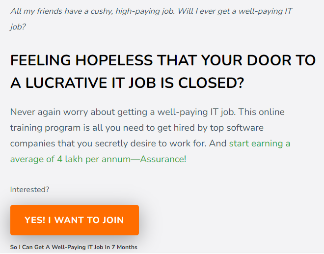
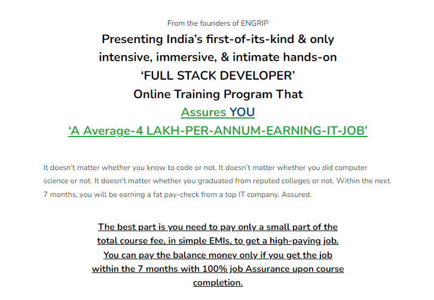
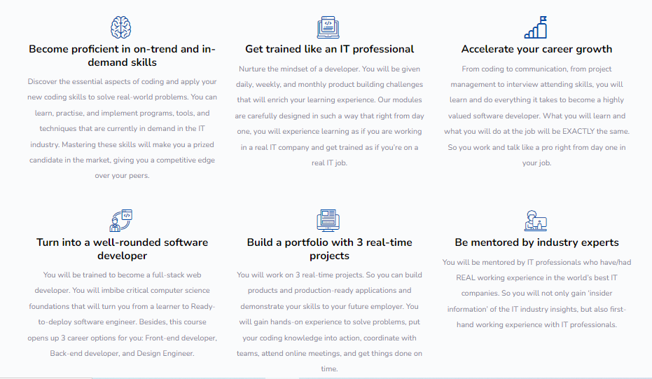
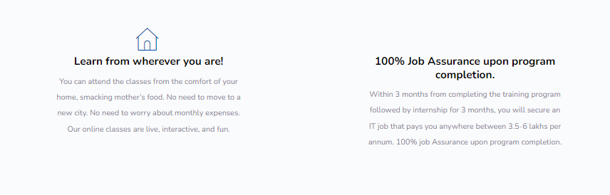
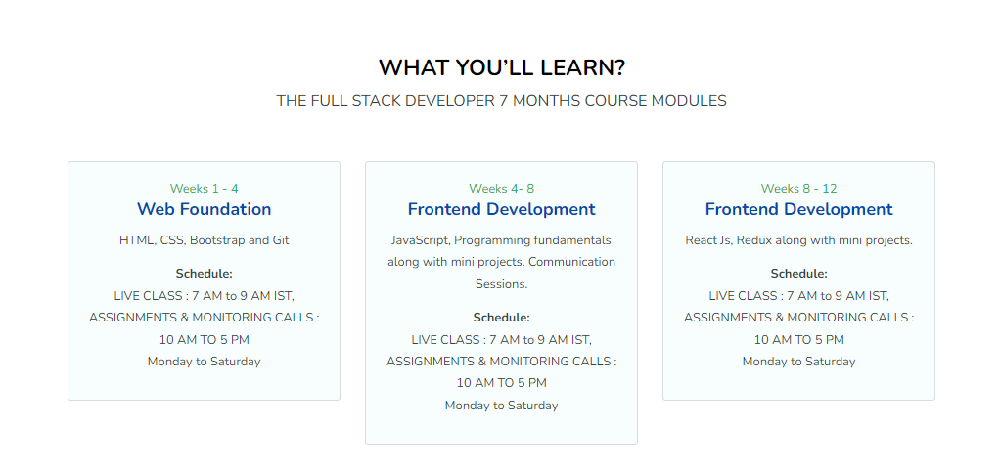
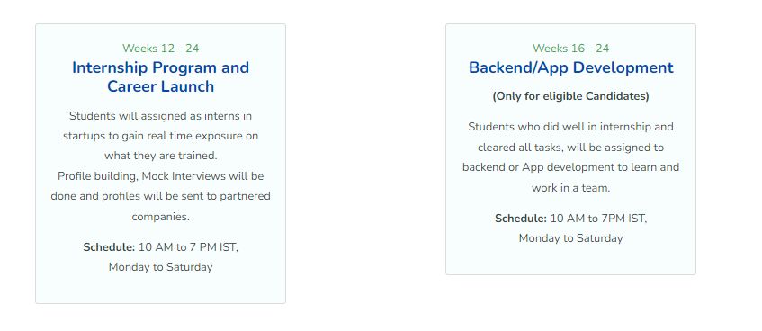
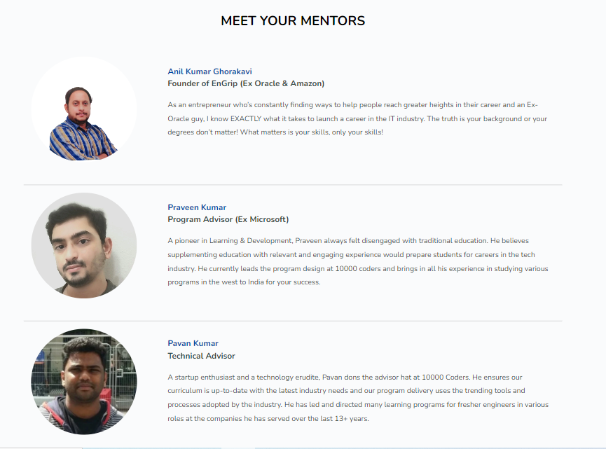
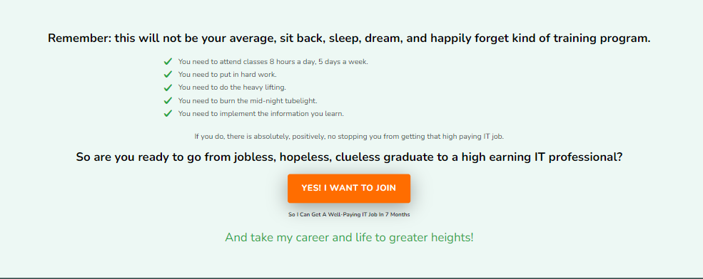

HOME
WHY
CIRRICULAM
TEAM
JOIN

Yes'I Want to Join
IS THIS YOU
Couldn’t stand seeing yourself as a failure in front of your parents
Avoiding your friends as they would boast about their new jobs
Fearing you will end in a poorly-paid graduate job that you’ll never like
Wondering how you will compete in the off-campus fresher recruitment race
Getting angry when your relatives show up
Constantly plagued by the question, “What will I do next?”
Because..
You didn’t get placed in the campus.
Your college doesn’t offer campus recruitment.
You’re being rejected in off-campus interviews.
You want to become a software engineer, but you’re not a computer science graduate.
You’re clueless how to get a well-paying IT job off campus.
If so, it’s time you put an end to your career worries and sleepless nights. Once and forever.






